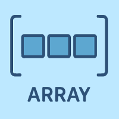

配列

- プロンプト例
JavaScriptの配列について解説して
- 配列は複数の値を1つの変数でまとめて管理するためのデータ構造です。
const fruits = ['りんご', 'みかん', 'バナナ'];
- fruits[0] → 'りんご'
- fruits[1] → 'みかん'
- fruits[2] → 'バナナ'
👉️ インデックスは0から始まるのが重要ポイントです。
配列の作り方
① リテラル構文（推奨）
const arr = [1, 2, 3, 4];
② Arrayコンストラクタ
const arr = new Array(1, 2, 3);
※ 通常は①の書き方が使われます。
要素の取得・変更
const nums = [10, 20, 30]; console.log(nums[1]); // 20 nums[1] = 99; console.log(nums); // [10, 99, 30]
要素の追加・削除
末尾に追加（push）
arr.push(4);
末尾を削除（pop）
arr.pop();
先頭に追加（unshift）
arr.unshift(0);
先頭を削除（shift）c
arr.shift();
配列の長さ
arr.length;
const a = [1, 2, 3]; console.log(a.length); // 3
ループ処理（超重要）
for文
for (let i = 0; i < arr.length; i++) { console.log(arr[i]); }
for...of（おすすめ）
for (const value of arr) { console.log(value); }
forEach
arr.forEach((value, index) => { console.log(index, value); });
超重要な配列メソッド5選 🔥
① map（変換）
const nums = [1, 2, 3]; const doubled = nums.map(n => n * 2); // [2, 4, 6]
② filter（絞り込み）
const nums = [1, 2, 3, 4, 5]; const even = nums.filter(n => n % 2 === 0); // [2, 4]
③ find（1件取得）
const nums = [5, 8, 12, 20]; const found = nums.find(n => n > 10); // 12
④ includes（存在確認）
[1, 2, 3].includes(2); // true
c⑤ reduce（集計・変換の神）c
const sum = [1, 2, 3, 4].reduce((a, b) => a + b, 0);
// 10
|
配列のコピー（超重要ポイント）
❌ 間違い（参照コピー）
const a = [1, 2, 3]; const b = a; b[0] = 99; console.log(a); // [99, 2, 3]
→ 同じ配列を参照している
✅ 正しいコピー（シャローコピー）c
const b = [...a];
または
const b = a.slice();
多次元配列（2次元配列）
const table = [ [1, 2, 3], [4, 5, 6], [7, 8, 9] ]; console.log(table[1][2]); // 6
よくある実用例
合計を求める
const total = prices.reduce((sum, p) => sum + p, 0);
オブジェクト配列の処理
const users = [ { name: '太郎', age: 20 }, { name: '花子', age: 25 } ]; const names = users.map(u => u.name); // ['太郎', '花子']
配列をマスターするとできること
- データ処理
- フロントエンド（DOM操作）
- APIレスポンスの加工
- React / Vue の状態管理